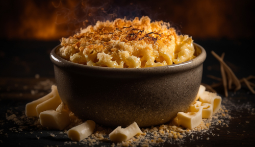

Baked Mac and Cheese

Image by vecstock on Freepik
Description
An amazing mac and cheese recipe made with three cheese your friends and family are sure to love.
Ingredients
- 1 lb dry pasta, Cavatappi is perfect for this dish
- 8 Tbsp butter (1 stick)
- 1/2 cup all-purpose flour
- 2 cups whole milk
- 2 cups half and half
- Pinch of nutmeg
- 1 tsp garlic powder
- 1/2 tsp dried mustard
- 3 cups sharp cheddar cheese, shredded
- 2 cups Gruyere cheese, shredded
- 1 cup white cheddar cheese, shredded
Topping
- 1/2 cup panko
- 3 Tbsp butter, melted
- 1/4 tsp seasoned salt
Steps
- Preheat the oven to 350F/175C. Grease a 9 x 13 baking dish with cooking spray or melted butter and set aside.
- In a small bowl, mis the topping ingredients and set aside.
- Bring a large pot of salted water to boil. Cook the pasta until about 2 minute less than the time indicated on the package for al dente. It will get to al dente during the baking portion. Save some of the pasta water before straining the pasta. Set aside.
- In a large saucepan over medium high heat, melt the stick of butter (do not allow it to brown). Sprinkle in the flour and whisk to combine. Continue to cook, stirring for about 1 minute. Continue whisking constantly and slowly pour the milk in a thin, steady stream followed by the half and half until everything is combined and smooth.
- Whisk in the black pepper, nutmeg, garlic powder, and ground mustard. Stir until sauce comes to a simmer and begins to thicken, roughly 6-8 minutes. When the sauce coats the back of a wooden spoon you should be able to draw a path through it with a finger and the line remain. This is how you know the sauce is ready.
- Reduce heat to low and, working in increments, add the cheese. Stir until the cheese has melted before adding more cheese. Continue this way until all the sharp cheddar and Gruyere are melted and the sauce is smooth and creamy.
- Splash a little of the pasta water back onto the pasta and stir until the spoon moves freely and the pasta is no longer stuck together.
- Pour the cheese sauce over the pasta and mix until evently coated.
- Add the white cheddar cheese and mix well. Season with salt and pepper to taste.
- Pour the cheesy pasta mix into the prepared baking dish and smooth it out to an even layer. Sprinkle the panko topping and place into the oven for 20 minutes. If the top isn't golden enough for your liking you and place it under the broiler for 2-3 minutes. Be sure to keep an eye on it.
- Remove from the oven and let sit for 10 minutes before serving.
Notes
- After adding the cheese in step six do not let the sauce come to a boil.
Home